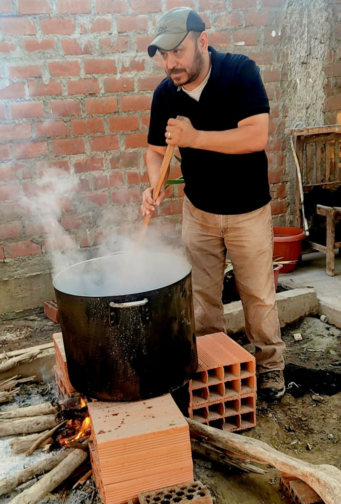

Computational anthropology, archaeology, and quantitative inference
Erik Otárola-Castillo is an Associate Professor of Anthropology at Purdue University whose research links hunter-gatherer ecology, archaeology, and quantitative method.
His work develops Bayesian, morphometric, and simulation-based approaches for questions about diet, mobility, faunal transport, bone-surface modification, and archaeological inference.
Research areas.
Hunter-gatherer ecology, Paleoindian archaeology, Bayesian statistics,
morphometrics, zooarchaeology, computational anthropology, and reproducible
quantitative method.
Current research areas
- Energetic and ecological modeling of forager behavior and diet.
- Bayesian and likelihood-based inference in archaeology.
- Morphometric approaches to lithics and bone-surface modifications.
- Quantitative archaeology across the Americas, Africa, and comparative human evolution.
Recent publications
-
A New Approach to the Quantitative Analysis of Bone Surface Modifications:
the Bowser Road Mastodon and Implications for the Data to Understand
Human-Megafauna Interactions in North America
(2023)
-
The Bayesian Inferential Paradigm in Archaeology
(2023)
-
Urbanization, migration, and indigenous health in Peru
(2023)
-
Beyond Chronology, Using Bayesian Inference to Evaluate Hypotheses in Archaeology
(2022)
-
Machine learning, bootstrapping, null models and why we are still not
100% sure which marks were made by crocodiles
(2022)
-
Parts and Wholes: Reduction Allometry and Modularity in Experimental Folsom Points
(2022)
-
Does the Evidence at Arroyo del Vizcaíno (Uruguay) Support the Claim of Human Occupation 30,000 Years Ago?
(2022)
-
Household conditions modulate associations between cesarean delivery and childhood growth
(2022)
-
Integrated evidence-based extent of occurrence for North American bison (Bison bison) since 1500 CE and before
(2023)
-
Early human impacts and ecosystem reorganization in southern-central Africa
(2021)
-
Significant northwest shift in suitable climate expected for North American bison by the year 2100
(2026)
Profile links
Purdue faculty profile
Google Scholar profile
TIME author page
Blog posts by Erik